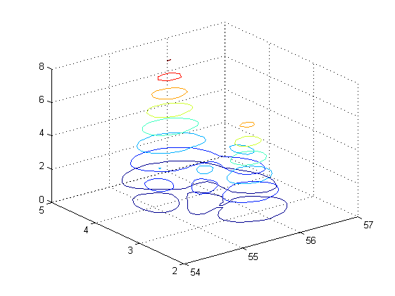
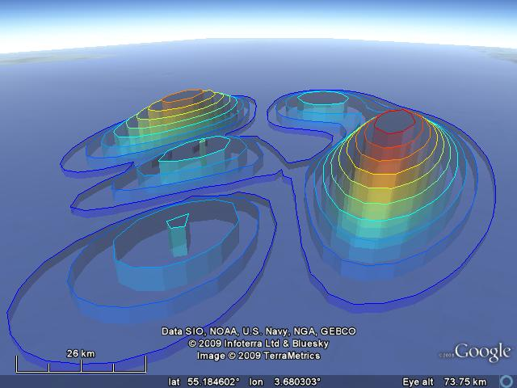
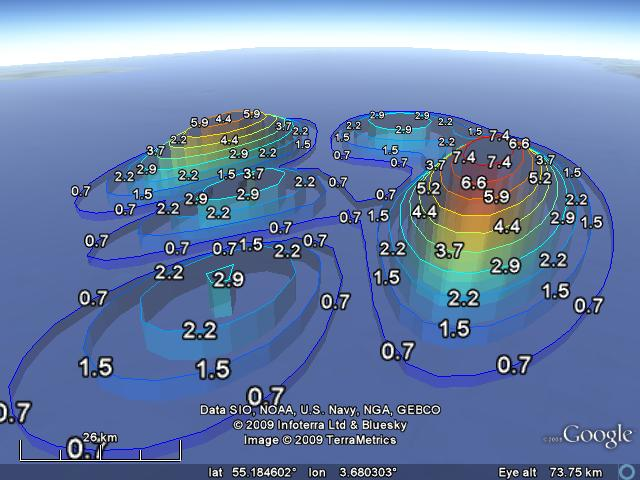

Simple case
First generate some data.
[lat,lon] = meshgrid(54:.1:57,2:.1:5); z = peaks(31); z = abs(z); fname = 'contour3.kml'; % we can make a contour plot of this data in Matlab: contour3(lat,lon,z) % Similarly in KML. Because we really want to exagerate the height, we % specify a zScaleFun, the anonymous functions that scaels the height. KMLcontour3(lat,lon,z,'fileName',fname,'zScaleFun',@(z) (z+.2)*1000);

Next to the contour KML file, a labels file has been created. This file can be also be added.
